I’m Nwaigbo John Cherechim. My work spans data analytics, machine learning, engineering modelling, workflow automation and sustainability. I enjoy taking messy technical problems from raw information to a result people can use.
My professional experience combines business intelligence, technical reporting, process visibility, automation and community data work.
Analyse operational, production and card/chip datasets with Excel and SQL; develop monitoring outputs, Gantt plans and structured reports; support technical requirements and deployment documentation; and build n8n workflows that improve information flow.
Analyse participation and feedback data for monitoring and evaluation. Supported sustainability education reaching more than 650 students at New Estate Baptist Schools on clean energy, waste reduction and climate action.
Analysed welfare survey responses from 168 corps members, prepared dashboards and worked with camp leadership to translate findings into practical programme recommendations.
Filter the portfolio by area. Project content lives in projects.js, so a new project can be added without redesigning the site.
A multi-stage pipeline connecting Python/PyTorch prediction with MATLAB/Simulink physical modelling and closed-loop cooling control. It includes changing load and ambient-temperature scenarios, thermal-response comparison, AI state logic and an automated performance report.
GitHub repository link will be added when the battery project repository is ready.
This gallery is chronological. It shows the steady improvement in my dashboard design: Excel foundations, deeper Excel + SQL analysis, then Power BI with stronger modelling, interaction, visual hierarchy and storytelling.
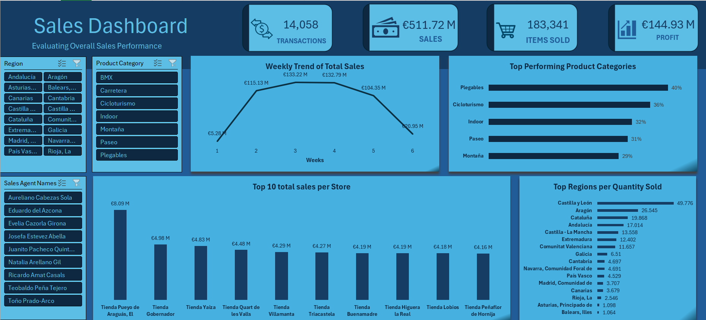
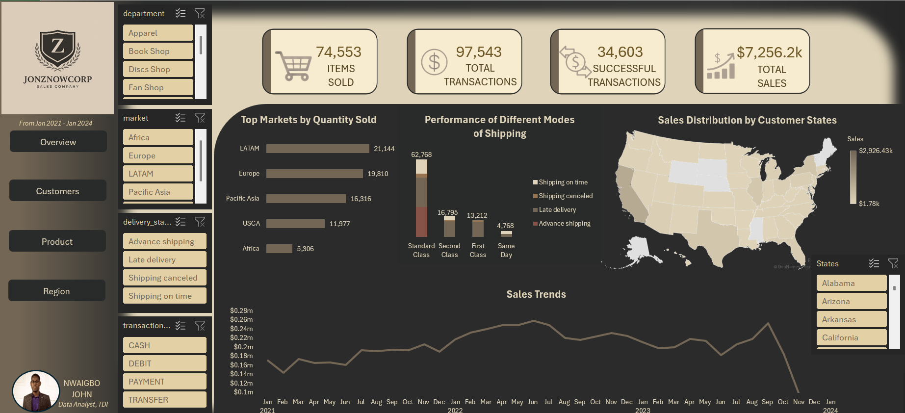
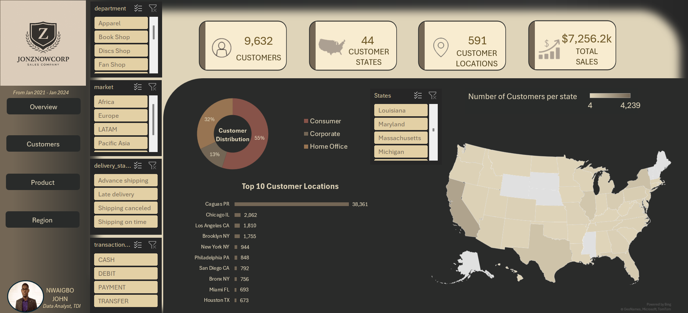
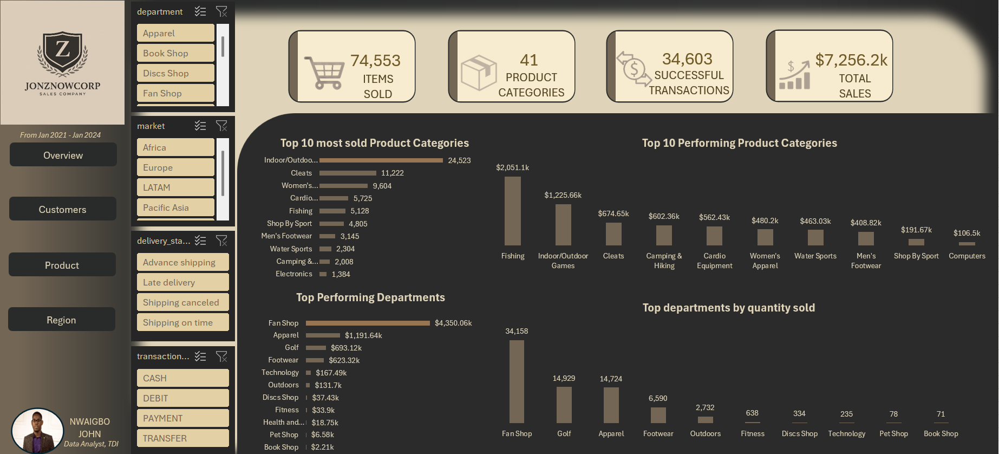
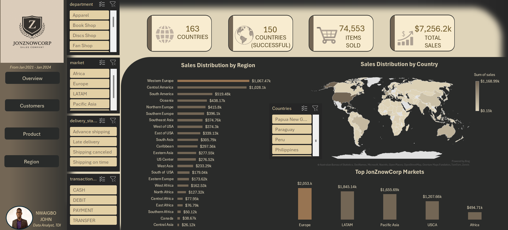
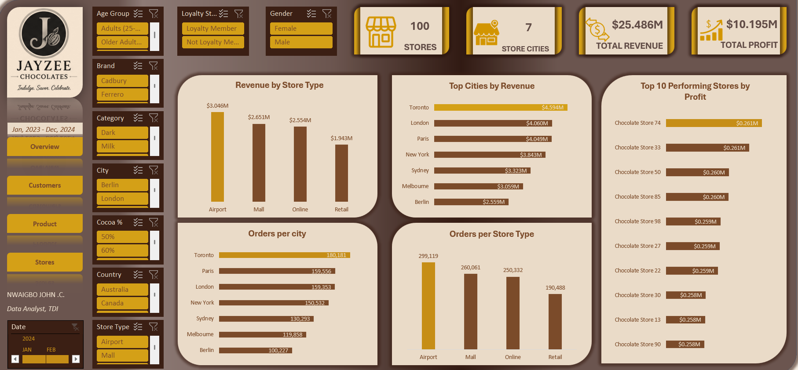
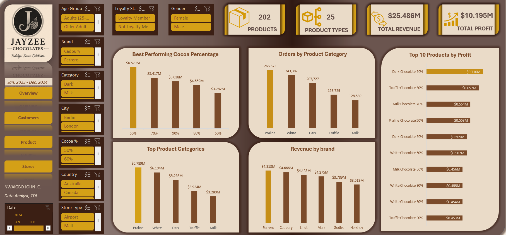
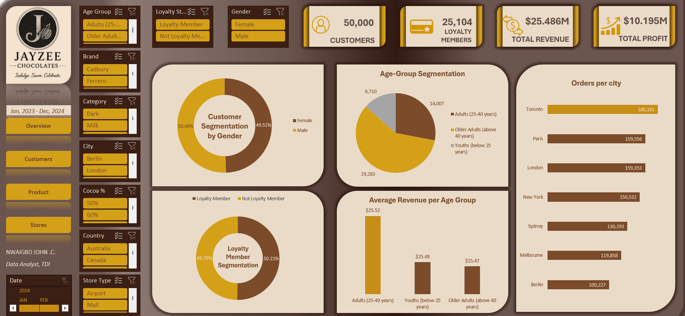
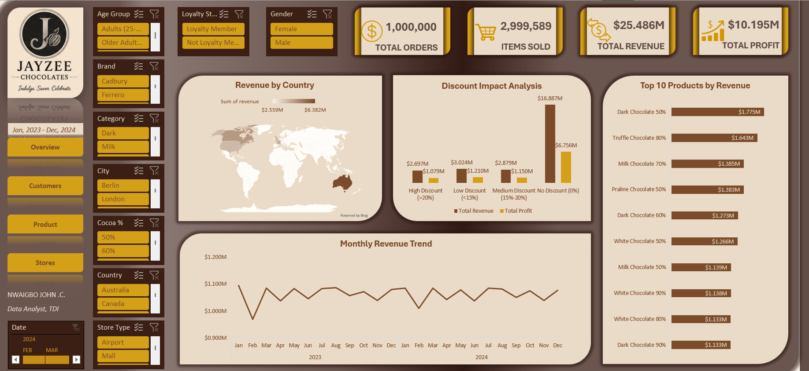
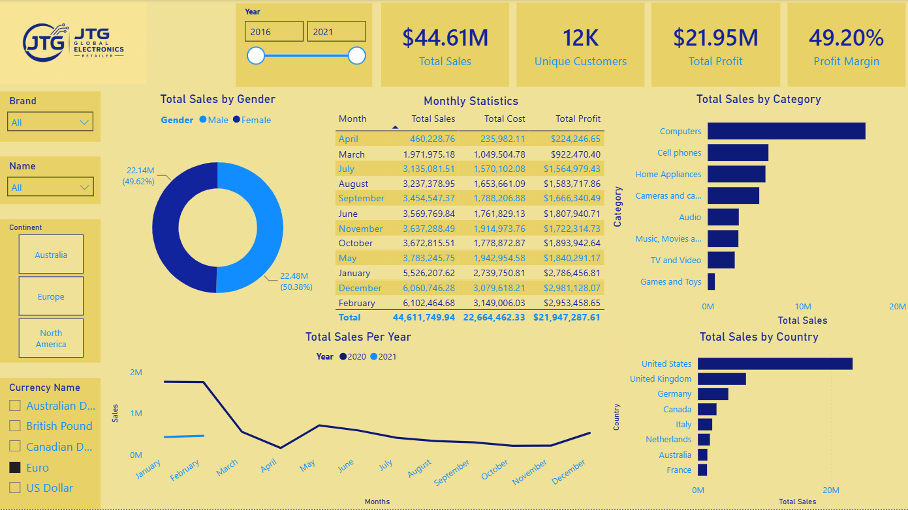
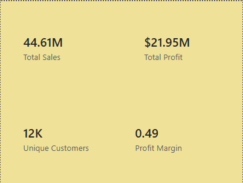
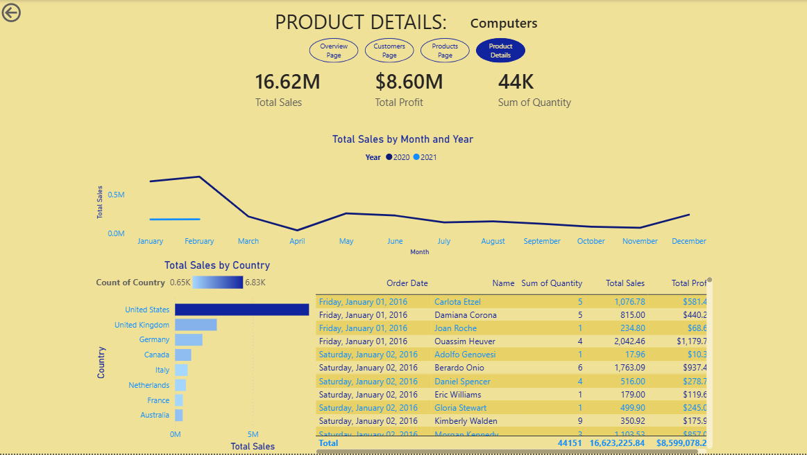
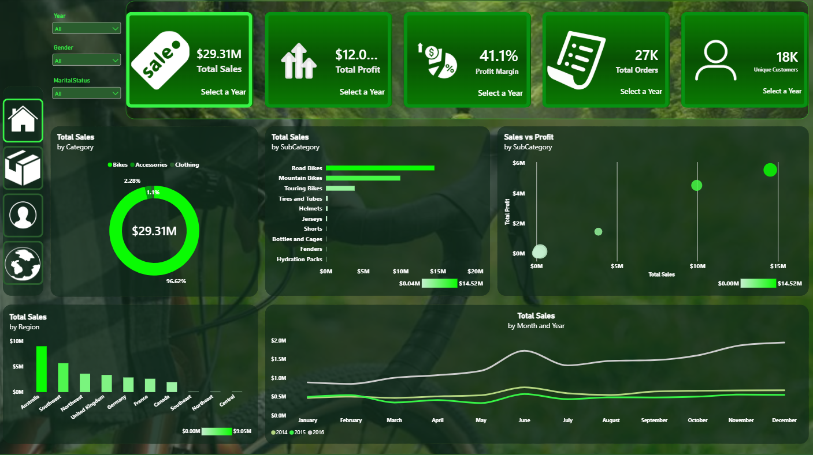
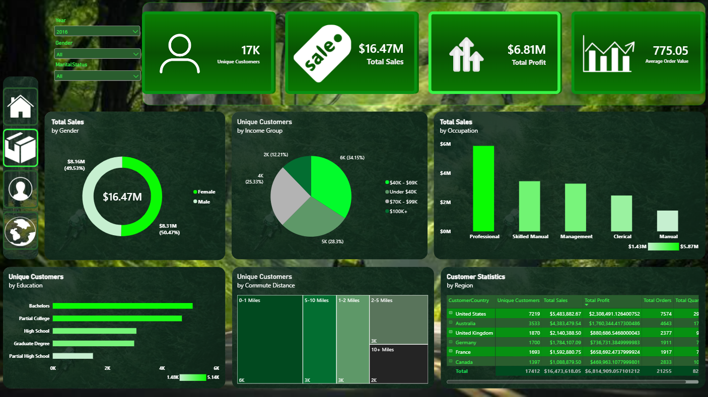
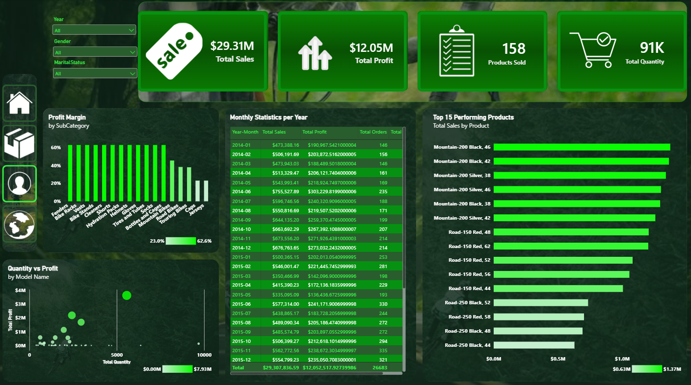
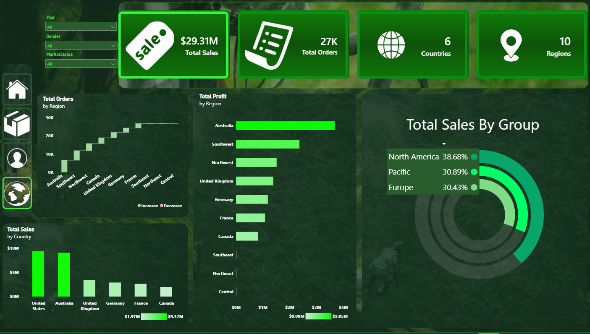
Power BI, DAX, Excel, SQL, data cleaning, relational modelling, KPI design and dashboard storytelling.
Python, PyTorch, scikit-learn, Pandas, NumPy, Matplotlib, model training and evaluation.
MATLAB, Simulink, Simscape, Arduino, automatic control, engineering modelling and sustainable-energy systems.
n8n, APIs, structured workflow design and AI-assisted automation.
Open to data analytics, AI/ML, sustainable-energy research, automation and technically demanding projects.